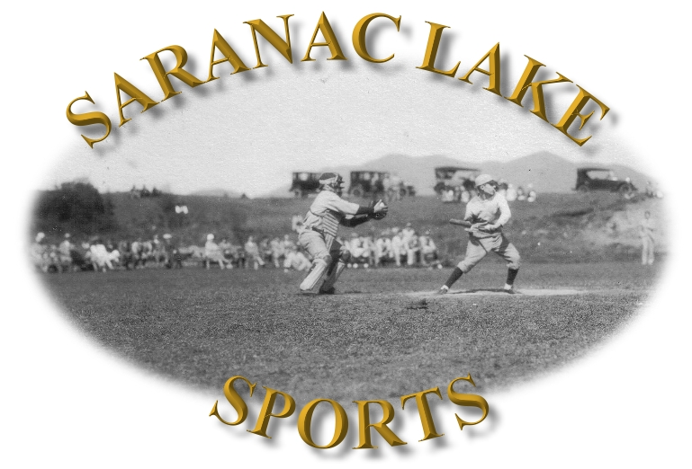
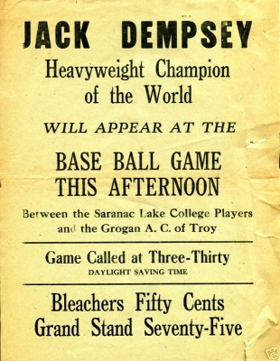
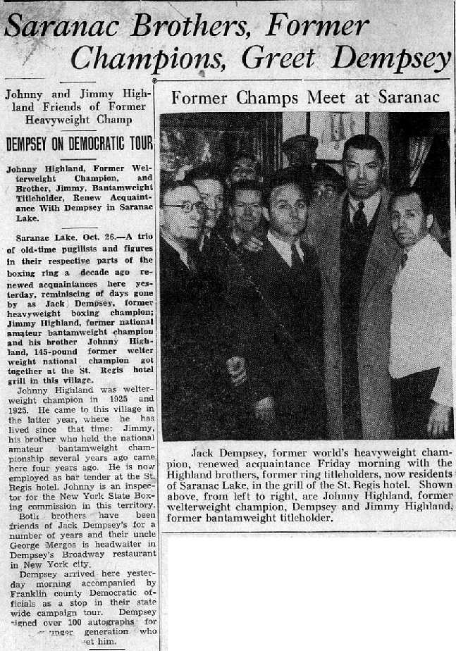

 JACK DEMPSEY WITH JOHNNY AND JIMMY HIGHLANDANOTHER SHOT IN THE TAP ROOM
JACK DEMPSEY WITH JOHNNY AND JIMMY HIGHLANDANOTHER SHOT IN THE TAP ROOM
An outstanding college career at Holy Cross had made Doc Gautreau a popular figure in Boston, even though he never achieved major league stardom. When Boston fans gave the Braves second baseman a “Day,” he responded by tying a Major League record.
On September 3, 1927, the Beantown fans awarded him a car on “Hogan/Gautreau Day.” (Shanty Hogan, Boston catcher, was also honored that afternoon.) Doc acknowledged the gift by stealing home twice and also scoring on a hit, accounting for three of Boston’s four runs in a 4-3 victory. The two steals of home tied a Major League record, and would not occur again until 1958.

 LOOKING DOWN BERKLEY HILL ON "BASEBALL DAY"
Thanks to Robert ReidTHE BALL PARK LOCATED ON LAKE STREET HILL WHERE PETROVA SCHOOL NOW SITS--1900sJACK DEMPSEY (WEARING TIE AND HAT) AND THE SARANAC LAKE BASEBALL TEAMANOTHER VIEW--1900sLARRY DOYLELARRY DOYLE PICLARRY DOYLE AND LITTLE BRIAN FINA
LOOKING DOWN BERKLEY HILL ON "BASEBALL DAY"
Thanks to Robert ReidTHE BALL PARK LOCATED ON LAKE STREET HILL WHERE PETROVA SCHOOL NOW SITS--1900sJACK DEMPSEY (WEARING TIE AND HAT) AND THE SARANAC LAKE BASEBALL TEAMANOTHER VIEW--1900sLARRY DOYLELARRY DOYLE PICLARRY DOYLE AND LITTLE BRIAN FINA CHRISTY MATHEWSONERNIE STAUTNER1950 PINE ROOM SOFTBALL TEAMSKATING RACES AT THE PONTIAC BAY RINK
CHRISTY MATHEWSONERNIE STAUTNER1950 PINE ROOM SOFTBALL TEAMSKATING RACES AT THE PONTIAC BAY RINK In 1922 Ed was shot at, this time by lawmen. He was transporting 21 cases of booze to New York City when he broke through a roadblock, which put out his headlights. Police fired three shots into the back of his car and pulled him over. Things must have gotten boring for Ed in between skating and baseball season.
In 1932 Ed fell 15 feet from a ladder onto a cement floor while he was working at the Mountain Gas Company gas plant on Payeville Road. He was taken to the Saranac Lake General Hospital and examined by Dr. Warriner Woodruff and Dr. Julius Cone. He had broken his left hip,left femur and splintered his left wrist and had lacerations of the shoulders. The doctors said his skating and baseball days were over. Ed melted down his hundreds of medals around this time.
Ed worked as locktender at the lower locks from the late forties to the late fifties. Ripley's first Believe it or not cartoon featured an article on Ed and he was chosen king of the 1962 Saranac Lake Winter Carnival. He died seven months later, September 5, 1962. Saranac Lake officially mourned Ed Lamy on Monday September 10, 1962 by lowering all village flags to half mast.
ED LAMYED LAMY JUMPING EIGHT BARRELSED LAMY JUMPING NINEED LAMY JUMPING TENJUNIOR WALSH AT 19,SKATING AT THE PONTIAC BAY RINK WINTER CARNIVAL AT THE PONTIAC BAY RINK THE OLD SKATING RINK AT PETROVATHE OLD SKATING RINK AT PETROVA WITH BING KUNATH AND GEORGE BEDORE, CARETAKERS At the age of nineteen Tommy was chosen to try out for the Olympics as a speed skater but injured his knee in St. Paul during the tryouts and couldn't continue. Tommy was Outdoor National Champion Speed Skater in 1952 and held the record for the 880. This record stood until 1957! If he hadn't been cut short in life he may well have been an Olympic medalist. Patty also had the potential to be a speed skating champ but with Tommy's tragic death and the passing of her father six months later, she may have lost some of the drive needed to continue. This was also a loss for Saranac Lake.
This first pic is of the Lake Colby Skating Club and was taken in 1950.
LEFT TO RIGHT: "Red" LaFountain, Jimmy Hoyt, Billy Baker, Patty Fina, Jimmy LaFountain, Tommy Fina, Linus Fobare and coach, Phil Daniels.
LAKE COLBY SKATING CLUB
BERKSHIRE HILLS RACE
ST. PAUL RACE
TOMMY FINA'S HIGH-SPEED WIPEOUT AT PETROVA RINK
MEDALS GALORETHE TEAMTHE 1900 SARANAC LAKE HOCKEY TEAM.
OLD ARMORY AND CURLING CLUB CURLING CLUB OF SARANAC LAKESKI JUMPING ON BLOOD HILL IN SARANAC LAKE-1918SKI JUMPING ON BLOOD HILL IN SARANAC LAKEMORE SKI JUMPING IN SARANAC LAKESKIING AT BETTER'S HILL SKI AREA IN SARANAC LAKEMOUNTAINSIDE GUN CLUBFOX HUNT ON MT PISGAHRAY BROOK GOLF LINKSFUTURE BIG LEAGUERS? 1962 "MATTY'S"--BOB GRIFFIN AND CLARENCE McCORMICK COACHING--MATTY LEAGUE -- LIMEY LAWRENCE AND BOB NELSON COACHING-- THANKS TO DAVE MARTIN1948 LAKE COLBY ASSOCIATION PEE WEE HOCKEY TEAMLEE TURNER FISHIN' ON A SUNNY SUMMER DAY IN ONCHIOTA1965 14 YEAR OLD BILLY ALLEN AND A BATCH OF FISH--BACK WHEN IT WAS SAFE TO EAT THEM!PONTIAC RINK